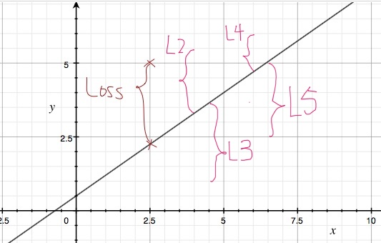

在机器学习中最基本的关系是输入和输出（一般是标签），数学上可以看做 f(W,x) = Wx + b。W 是我们可以设置的权重。可以看出，为了得到最优的输出，我们必须不断调整 W 和 b 的值。
损失函数是用来估量你模型的预测值f(x)与真实值Y的不一致程度，它是一个非负实值函数,通常使用L(Y, f(x))来表示。损失函数的值越小，越接近真实值。
因此，我们通过降低损失函数的值来提高识别的准确性。
从数学的角度分析
我们用最简单的方程式来表示预测的函数：
f(W, x) = Wx + b
y_ :真实值
# W 代表权重，是可调整的参数；b 是偏置量，同样是可调整的参数。
#上述两个参数是神经网络需要不断调整得到的目标参数。
在训练时，每个训练样本都会有一个对应的结果的真实值，我们用 y_表示。

上图表示的是 f(x) = 0.7x+0.5，我们以这个函数作为模型。
假设我们在训练时输入（x，y_)为(2.5,5)。那么由于x = 2.5, f(2.5) = 2.25
因此，我们可以看到，在真实值y_= 5和模型预测值f(2.5) = 2.25之间存在很大差距。如果我们以欧式距离代表损失大小（也有其他方法，见下文），图中花括号代表的距离就是这个模型的损失函数。数学的表示即：
L(f(x), y_) = f(x) - y_
假设我们训练样本有多个，我们每个样本产生的损失值都有可能不同，那么情况会变成这样：
根据这些损失，我们会不断调整参数的值，不断逼近最相似的函数，得到最优的模型。
Multiclass Support Vector Machine loss多重支持向量机损失 （SVM Loss）
As a first example we will first develop a commonly used loss called the Multiclass Support Vector Machine (SVM) loss. The SVM loss is set up so that the SVM “wants” the correct class for each image to a have a score higher than the incorrect classes by some fixed margin ΔΔ. Notice that it’s sometimes helpful to anthropomorphise the loss functions as we did above: The SVM “wants” a certain outcome in the sense that the outcome would yield a lower loss (which is good).
以上是来自斯坦福cs231n课程里的notes。这里的SVM主要用于计算损失大小。
百度百科对支持向量机SVM的定义如下
SVM的主要思想可以概括为两点：
1.它是针对线性可分情况进行分析，对于线性不可分的情况，通过使用非线性映射算法将低维输入空间线性不可分的样本转化为高维特征空间使其线性可分，从而使得高维特征空间采用线性算法对样本的非线性特征进行线性分析成为可能。
2.它基于结构风险最小化理论之上再特征空间中构建最优超平面，使得学习器得到全局最优化，并且在整个样本空间的期望以某个概率满足一定上界。
在图像分类中，图像分类的结果是一个列向量，如下图：

上图中第一列的损失值计算方法如下：
loss = max((5.1 - 3.2) + 1, 0)+ max((-1.7 - 3.2) + 1, 0)
=2.9
依我浅显之见，多重支持向量损失函数实际上是将分类结果中正确的分类值与不正确的分类值进行比较。正常来说，我们希望函数的结果是将分类结果中分类正确的值（例如将猫的图片进行分类，结果标签是猫的）高，说明分类正确；而错误的分类中，值就低。
这些分类结果通过SVM损失函数后，会得到一个损失的值，而SVM通过数学方式量化了分类结果和真实结果的差异程度。
它的公式如下：

Softmax 函数
公式如下：

以下图为例，讲解一下Softmax是如何实现的

我们用Python来验证一下：
In [1]: import numpy as np
In [12]: cat = np.exp(3.2)
In [13]: car = np.exp(5.1)
In [14]: frog = np.exp(-1.7)
In [15]: sum1 = cat + car + frog
#求和，并求概率，即所占比例
In [16]: sum1
Out[16]: 188.73712102106381
In [17]: cat2 = cat/sum1
In [18]: cat2
Out[18]: 0.12998253901717313
In [19]: car2 = car/sum1
In [20]: car2
Out[20]: 0.86904953520826567
In [21]: frog2 = frog/sum1
In [22]: frog2
Out[22]: 0.0009679257745610439
In [24]: -np.log(cat2)
Out[24]: 2.0402208285265546
需要注意的是log是以e为底数的，上面图片的来源CS231n的公开课用的PPT的结果是错误的